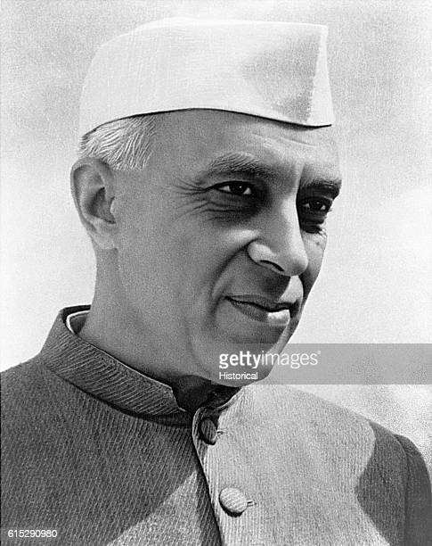

Jawaharlal Nehru

Born: 14 November 1889, Prayagraj
Died: 27 May 1964, New Delhi
Spouse: Kamala Nehru (m. 1916-1936)
Parents: Motilal Nehru
Famously Known As: Chacha Nehru, Pandit Nehru
Pandit Jawaharlal Nehru was born on 14th November 1889. He was the single child of Motilal
Nehru and Swarup Rani Nehru. Nehru was one of the most renowned barristers and was known
for his intellectual capabilities which soon made him one of the greatest politicians India had
ever seen. Nehru, under the approval of Gandhi, his mentor, rose to become one of the most
dominant figures in Indian politics from the 1930s onwards. Nehru, after much deliberations,
accepted the partition proposal for India in 1947 and took oath as the First Prime Minister of
India after attaining independence. His birthday on 14 November is widely celebrated in India as
Children's day.
Nehru was born to a family of Kashmiri Brahmans, noted for their administrative aptitude and
scholarship, who had migrated to Delhi early in the 18th century. He was a son of Motilal Nehru,
a renowned lawyer and leader of the Indian independence movement, who became one of Mohandas
(Mahatma) Gandhi's prominent associates. Jawaharlal was the eldest of four children, two of
whom were girls. A sister, Vijaya Lakshmi Pandit, later became the first woman president of
the United Nations General Assembly.
Until the age of 16, Nehru was educated at home by a series of English governesses and tutors.
Only one of those—a part-Irish, part-Belgian theosophist, Ferdinand Brooks—appears to have made
any impression on him. Jawaharlal also had a venerable Indian tutor who taught him Hindi
and Sanskrit. In 1905 he went to Harrow, a leading English school, where he stayed for two years.
Nehru's academic career was in no way outstanding. From Harrow he went to Trinity College,
Cambridge, where he spent three years earning an honours degree in natural science.
On leaving Cambridge he qualified as a barrister after two years at the Inner Temple,
London, where in his own words he passed his examinations “with neither glory nor ignominy.”
Know more about Indian Freedom Fighters through our blog on Indian National
Movement!